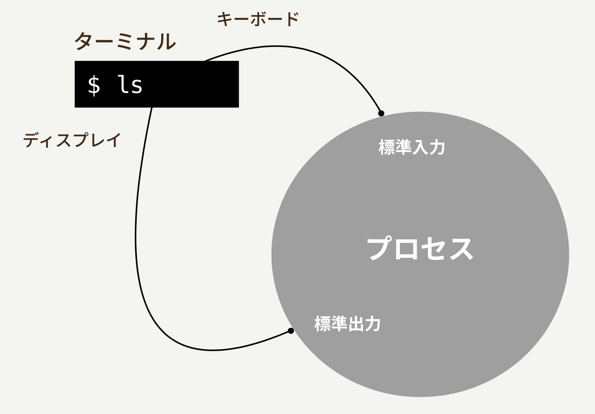

『なるほどUnixプロセス』を読む前にちょっとだけﾅﾙﾎﾄﾞとなる記事
初稿：2019-08-18
はじめに
この記事では、UnixのプロセスのことやUnix環境のことについてﾁｮｯﾄﾜｶｯﾀ気持ちになっていただくことを目的に、RubyをつかってUnixプロセスについて触れていきます。読み終わったあと、ﾁｮｯﾄﾜｶｯﾀｶﾓという気持ちになっていただけたり、著者が訳者として関わっている『なるほどUNIXプロセス』を手に取ってもらえたりすると幸いです。
なお、この記事の内容は、オープンソースカンファレンス2015 Hokkaido での jus 研究会で行った発表内容をまとめ、原稿におこしたものになります。
それでは、さっそく本題に入っていきましょう。
コマンドを実行する
ふだん、みなさんは作業中にターミナルからたくさんのコマンドを実行しているはずです。まずは、この「ターミナルからコマンドを実行する」ことについて見ていきましょう。
コマンドとプロセス
Unixでは、あらゆるコマンド、プログラムはプロセスというものの上で実行されます。たとえば、lsというコマンドを実行すると、OSは新しいプロセスを1つ用意します。そして、その上でlsプログラムが実行されることになります。

プログラムの実行が終わると、プロセスも同様に終了して無くなります。ターミナルからpsコマンドを実行することで、その時点で実際にうごいているプロセスを確認できます。
% ps
PID TTY TIME CMD
66461 ttys000 0:00.15 -zsh
出力のCMDという列を見れば、そのプロセスでどんなプログラムが動いているかわかります。上の実行例では、ターミナル上で zsh というシェルプログラムを実行中のプロセスが1つ存在していることがわかります。
psコマンドをそのまま実行した場合は、ターミナル上で実行されているプロセスだけが出力されます。もし、バックグラウンドで動いているプロセスも確認したければ、psコマンドに-xオプションをつけて実行します。
% ps -x
PID TTY TIME CMD
338 ?? 1:19.78 /usr/libexec/UserEventAgent (Aqua)
340 ?? 7:44.52 /usr/sbin/distnoted agent
341 ?? 0:10.74 /usr/sbin/universalaccessd launchd -s
342 ?? 1:02.59 /usr/sbin/cfprefsd agent
343 ?? 0:04.32 /usr/libexec/lsd
349 ?? 1:20.09 /System/Library/CoreServices/Dock.app/Contents/MacOS/Dock
...
それでは、ここで実際に簡単なRubyプログラムを動かしてみて、それがちゃんとプロセスとして実行されるということを確認してみましょう。まずはじめに、次のようなスクリプトを用意します。
puts 'hello'
そして、このスクリプトをターミナルから実行してみましょう。
% ruby hello.rb
hello
ちゃんと実行はできますが、これだと一瞬で終了してしまって、psコマンドを実行しているような隙はありませんね…それでは、sleep をつかって、このプログラムを実行したままにしてみましょうか。
puts 'hello'
sleep
再び、このスクリプトをターミナルから実行してみます。
% ruby hello.rb
hello
これでこのプログラムを実行中のままにすることができました。それでは、ターミナルをもう一つ立ち上げて、そこからpsコマンドを実行してみましょう。
% ps
PID TTY TIME CMD
66461 ttys000 0:00.26 -zsh
67220 ttys000 0:00.05 ruby hello.rb
67036 ttys001 0:00.11 -zsh
出力を見ると、たしかにRubyプログラムを実行しているプロセスが存在していることが確認できますね。
では、Ctrl-Cでプログラムを終了させてみてから、もう一度 ps コマンドを実行してみてください。
% ps
PID TTY TIME CMD
66461 ttys000 0:00.26 -zsh
67036 ttys001 0:00.11 -zsh
プロセスも終了していることが確認できました。
では、次に同じプログラムを2つ同時に実行してみたときの様子を見てみることにしましょう。ターミナルを2つ開いて、それぞれのターミナルから先ほどのプログラムを実行します。そして、さらに別のターミナルから ps コマンドを実行してみましょう。
% ps
PID TTY TIME CMD
66461 ttys000 0:00.26 -zsh
67524 ttys000 0:00.05 ruby hello.rb
67036 ttys001 0:00.13 -zsh
67571 ttys001 0:00.05 ruby hello.rb
67358 ttys002 0:00.08 -zsh
こうすると、「ruby hello.rb」を実行中のプロセスが２つあることがわかります。ここから、プロセスはプログラムを実行する度に用意されるものだ、ということが観察できます。同じプログラムでも、2つ実行すれば2つプロセスができる、ということですね。
ここまでは、とても基本的なプロセスの様子を観察してきました。それでは、ここからはこの「プロセス」というものがどんなものかを、もう少しだけ深く探求して行ってみましょう。
プロセスID
最初に、プロセスがもつプロセスIDというものについて説明します。プロセスIDとは、OSがプロセスを管理するためにプロセスに対して割りあてる番号で、プロセスごとにユニークな番号が振られます。

Rubyプログラムでは、Process.pid で自分自身のプロセスIDを確認できます。
では、さきほどのプログラムを改良して、プロセスIDを確認できるようにしてみましょう。
puts 'hello'
puts "私のプロセスIDは#{Process.pid}です"
sleep
では、改良したプログラムを実行してみましょう。
% ruby hello.rb
hello
私のプロセスIDは67830です
上記で表示された値が、このプロセスに振られたプロセスIDになります。それでは、先ほどの様にpsコマンドを実行してみてください。psコマンドでは、PIDという列でこのIDを確認できます。psコマンドの結果を確認して、プログラムが表示した値とPIDの値が確かに一致しているかを確認しましょう。
% ps
PID TTY TIME CMD
66461 ttys000 0:00.29 -zsh
67830 ttys000 0:00.05 ruby hello.rb
67036 ttys001 0:00.14 -zsh
一致していることが確認できますね！これで、プロセスIDというものの存在と、Rubyプログラムからはそれを Process.pid で取得できることがわかりました。ﾅﾙﾎﾄﾞ
標準ストリーム
続いて、プロセスが持つ「標準ストリーム」というものについて説明します。
すべてのプロセスには、標準ストリームというものがくっついてきます。これは、標準入力、標準出力、標準エラー出力という三つのものがあるのですが、今日は説明を簡単にするため、標準入力、標準出力に絞って見ていくことにします。
プログラムというものは、ざっくりと捉えると「何かしらの入力を受けて、処理をし、何かしらの結果を出力をするもの」と捉えることができます。そうしてプログラムを捉えたとして、その標準の入出力先としてプロセスとつながっているものが、この「標準ストリーム」というものになります。そして、この入出力は通常はターミナルと繋がっています。

先ほどのRubyプログラムでは、何も気にすることなく、putsメソッドをつかってターミナルに文字列を出力していましたね。
puts 'hello'
puts "私のプロセスIDは#{Process.pid}です"
sleep
実は、このputsメソッドの実際の振る舞いとは、標準出力に対して文字列を出力するという振る舞いなのでした。同様に、標準入力から文字列を受け取るには、gets メソッドを使用できます。
in = gets
puts "#{in}が入力されました"
より明示的に標準入出力に対する操作をする場合には、STDIN と STDOUT という定数を使います。
in = STDIN.gets
STDOUT.puts "#{in}が入力されました"
この「標準入力」「標準出力」というものは、実際にはターミナル以外のものに付け替えることも可能です。
そのことを説明するために、次にファイルとファイルディスクリプタというものを紹介します。
ファイルとファイルディスクリプタ
Unixは、プロセスが繋がっている入出力先をファイルというものに抽象化します（この抽象化したものを「リソース」と表現したりもします。以降はリソースという言葉を使っていきますね）。そして、プロセスをプロセスIDというIDで管理するのと同じように、リソースはファイルディスクリプタという一意な整数値で管理されます。

Rubyでは、リソースに対して fileno というメソッドを呼ぶことで、リソースに割り当てられているファイルディスクリプタを確認できます。
まずは標準入出力のファイルディスクリプタを確認してみましょう。
puts "標準入力のファイルディスクリプタ: #{STDIN.fileno}"
puts "標準出力のファイルディスクリプタ#{STDOUT.fileno}"
file = File.open('a.txt', 'w')
puts "a.txt ファイルへの入出力のファイルディスクリプタ: #{file.fileno}"
% ruby fileno.rb
標準入力のファイルディスクリプタ: 0
標準出力のファイルディスクリプタ1
a.txt ファイルへの入出力のファイルディスクリプタ: 7
どのリソースにもファイルディスクリプタがちゃんとあることが観察できますね。これで、標準入出力も、プログラムから開いたファイルの入出力も、プロセスにつながっている入出力というものは、どれも何となく同じように管理されていそうだ…ということを、感じていただけたのではないでしょうか。
標準入出力先を付け替えてみる
それでは、ちょっと実験してみましょう。同じように管理されているということは交換可能であるかもしれません。これらのものをすり替えてみると、一体どんなことが起きるでしょうか。Rubyでは入出力先に対して reopen というメソッドを呼んで別の入出力を渡すことで、入出力先を付け替えることができます。早速やってみましょう。
puts "標準入力のファイルディスクリプタ: #{STDIN.fileno}"
puts "標準出力のファイルディスクリプタ#{STDOUT.fileno}"
file = File.open('a.txt', 'w')
puts "a.txt ファイルへの入出力のファイルディスクリプタ: #{file.fileno}"
STDOUT.reopen(file)
puts '標準入力先が変わっているはず'
これを実行すると、どうなるでしょうか。
% ruby fileno.rb
標準入力のファイルディスクリプタ: 0
標準出力のファイルディスクリプタ1
a.txt ファイルへの入出力のファイルディスクリプタ: 7
おや？最後の「標準入力先が変わっているはず」が出力されてませんね。これはもしや…ということで、a.txtの中を確認してみましょう。
% cat a.txt
標準入力先が変わっているはず
やりましたね。STDOUT.reopen(file)をすることで、標準出力がa.txtへの出力につけ変わり、putsメソッドの出力先がa.txtになったということが観察できました。ｵﾓｼﾛｲ
リダイレクション
Unixでは、こうした性質を利用して標準入出力先を別のリソースへの入出力につけかえる「リダイレクション」という仕組みがあります。この「リダイレクション」という仕組みを使うと、いちいちRubyプログラムの中でごにょごにょしなくても、もっと簡単に標準入出力先を切り替えることができます。
たとえば、wc コマンド（行数，単語数，バイト数などを数えるコマンド）への標準入力を a.txt というファイルにしたい場合は以下のようにします。
% wc -l < a.txt
1
また、ps コマンドの標準出力を b.txt というにしたい場合は以下のようにします。
% ps > b.txt
% cat b.txt
PID TTY TIME CMD
66461 ttys000 0:00.29 -zsh
以下のような感じで、標準入出力を両方を差し替えることも、もちろんできます。
% wc -l < a.txt > b.txt
% cat b.txt
1
こんな感じで、コマンドを実行する時にちょっと書き方を変えてあげるだけで、入出力先を簡単につけかえることができるわけです。ﾍﾞﾝﾘﾃﾞｽﾈ
ここまでのまとめ
ここまでで、1つのコマンドを実行するときに起きていることとして、以下のようなことを説明してきました。
- コマンドはプロセスとして実行される
- プロセスはIDを持つ
- プロセスは標準ストリームを持つ
- プロセスは繋がった入出力をファイルとして扱う
次は、プロセスは１人で生きてるわけじゃなくて、親や子がいる、といった話をします。
親プロセス
すべてのプロセスには、親となるプロセスが存在します。
Rubyでは、Process.ppid で自分の親のプロセスIDを確認できます。
puts 'hello'
puts "私のプロセスIDは#{Process.pid}です"
puts "私の親プロセスのIDは#{Process.ppid}です"
sleep
プログラムを実行すると、親プロセスのIDが出力されるはずです。
% ruby hello.rb
hello
私のプロセスIDは68903です
私の親プロセスのIDは67036です
では、psコマンドを実行して、親のプロセスが何者なのかを確認してみましょう。
% ps
PID TTY TIME CMD
66461 ttys000 0:00.29 -zsh
67036 ttys001 0:00.30 -zsh
68903 ttys001 0:00.05 ruby hello.rb
67036のプロセスは…zshですね。Rubyプログラムの親プロセスはシェルを実行中のプロセスだということがわかりました。実は ps コマンドからも親プロセスIDを確認することができます。-l オプションをつけて ps コマンドを実行してみてください。PPID という列に親プロセスIDが出力されるようになります。
% ps -l
UID PID PPID F CPU PRI NI SZ RSS WCHAN S ADDR TTY TIME CMD
501 66461 66460 4006 0 31 0 2494520 5856 - S 0 ttys000 0:00.30 -zsh
501 67036 67035 4006 0 31 0 2501688 6192 - S 0 ttys001 0:00.30 -zsh
501 68903 67036 4046 0 31 0 2467288 7388 - S+ 0 ttys001 0:00.05 ruby hello.rb
zsh プロセスにも親がいることがわかりますね。確認ははしょりますが、これはターミナル.appを実行中のプロセスになります。つまり、ターミナルからコマンドを実行する、という操作は、ターミナル.appが生成したシェルプロセス(上記ではzsh)が入力された文字列を解釈し、そして該当するコマンドを見つけ、そのコマンド(プログラム)を実行するプロセスを生成してコマンドを実行する、というような操作だということが想像できます。
次は、上記のようなこと、つまり実行中のプロセスから別のプロセスを生成する、ということをRubyプログラムの中で実際に行いながら、プロセスと仲良くなっていってみたいと思います。
fork
Unixで別のプロセスを生成するにはforkというシステムコールを使用します。Rubyではそのままの fork メソッドというメソッドがあり、そのメソッドを呼び出すことで別のプロセスを生成することができます。
puts "自分: PID(#{Process.pid}) PPID(#{Process.ppid})"
pid = fork do
puts "子ども: PID(#{Process.pid}) PPID(#{Process.ppid})"
end
Process.waitpid(pid)
Rubyでforkを使う際の一般的な使い方はこんな感じです。こうすると、forkメソッドを呼び出しているところで、このRubyプログラムを実行しているプロセスに子どものプロセスが生まれます。

そして、子どものプロセスは、ブロックの中身だけを実行して終了するという動きをします。

それでは、このプログラムを実行してみましょう。
% ruby fork.rb
自分: PID(69193) PPID(66461)
子ども: PID(69238) PPID(69193)
たしかに、ブロックの中では違うプロセスIDが表示されていて、外側のプロセスがその親になっていることがわかります。
これで、あるプロセスから別のプロセスを生成する、ということをRubyの世界で観察してみることができました。次は、シェルがコマンドを別のプロセスで実行するように、Rubyプログラムを実行しているプロセスから別のプロセスを生成し、そこで別のプログラムを実行する、ということを実現してみましょう。
fork + exec
あるプロセスを別のプロセスにするには、exec というシステムコールを使います。forkと同じで、Rubyにもそのまま exec というメソッドが用意されています。
forkとこのexecを組み合わせて別のコマンドを実行する、というのが、Unixで良く使われるパターンの１つになります。それでは、生成した子プロセスでlsコマンドを実行するようなプログラムを作ってみましょう。
puts "自分: PID(#{Process.pid}) PPID(#{Process.ppid})"
pid = fork do
exec 'ps', '-l'
puts '子どもはもう別の道に進んだので、もうこの道は通らない'
end
Process.waitpid(pid)
puts 'psコマンドが実行されたはず'
このプログラムを実行すると、どうなるでしょうか。
% ruby fork_exec.rb
自分: PID(69420) PPID(66461)
UID PID PPID F CPU PRI NI SZ RSS WCHAN S ADDR TTY TIME CMD
501 66461 66460 4006 0 31 0 2494520 5920 - S 0 ttys000 0:00.34 -zsh
501 69420 66461 4046 0 31 0 2458072 7192 - S+ 0 ttys000 0:00.05 ruby fork_exec.rb
501 67036 67035 4006 0 31 0 2501688 6192 - S+ 0 ttys001 0:00.31 -zsh
psコマンドが実行されたはず
lsコマンドの結果が出力されましたね。また、「子どもはもう…」の行が実行されていないことから、子供のプロセスはexecを実行した段階で別のプログラムになってしまって、もうRubyプログラムを実行するプロセスではなくなってしまっていることも観察できます。
ここまでのまとめ
ここまでで、1つのコマンドを実行するときに起きていることとして、以下のようなことを説明してきました。
- シェルプロセスはプロンプトから渡された入力を解釈して
- forkして子プロセスを生成し、
- execしてその子プロセスをコマンドを実行するプロセスへと変身させる
- 子プロセスの標準入出力はプロンプトにつながっているので、結果はプロンプトに出力される
- 処理を終えると子プロセスは終了し、シェルプロセスは次の入力を待つ
これで、ふだんターミナルからコマンドを実行している時にどんなことが起こっているかのイメージが、なんとなく掴めましたでしょうか。ﾅﾙﾎﾄﾞ
さいごに、ここまでやってきたことを全部つなぎ合わせて、パイプというものを実現してみることにしましょう。
パイプ
| パイプとは、コマンドの結果を別のコマンドの入力にすることを可能にするUnixのしくみです。例えば、psコマンドの結果の行数をwcコマンドでカウントする、ということをしたければ、以下のように「 | 」でコマンドをつなげます。 |
% ps -x | wc -l
238
Unixには「一つのことを行い、またそれをうまくやるプログラムを書け。協調して動くプログラムを書け。」（M.D.マキロイ）という哲学があり、パイプはそのUnixの哲学を体現したしくみともいえるような、Unixにおける大事なしくみです。
では、このパイプは、どのようなしくみになっているのでしょうか。
原理はとてもシンプルです。実は、2つのコマンドの標準出力と標準入力をつなげる、ということをして、コマンドの結果を別のコマンドの入力にするということをしています。Unixではこれを行うための pipe というシステムコールが用意されていて、これがパイプの肝となります。Ruby でも IO.pipe メソッドを使うことで、このパイプを実現できます。
IO.pipeの使い方を、irbで少し練習してみます。
まずirbを立ち上げましょう。
% irb
>
パイプを作成するには、以下のようにします。
> read_id, write_id = IO.pipe
=> [#>IO:fd 9>, #<IO:fd 10>
IO.pipeをつかうと、このように2つの入出力が返ってきます。 これはパイプの入り口と出口にそれぞれ繋がっていて、 手前が出口、後ろが入り口と繋がっています。
では、パイプに何か書き込みんでみます。
> write_io.puts 'foo'
=> nil
> write_io.puts 'bar'
=> nil
そうしたら、今度はパイプから読み出してみます。
> read_io.gets
=> "foo¥n"
> read_id.gets
=> "bar¥n"
また、Rubyらしくブロックを使って以下のように書くこともできます。
> IO.pipe do |read_id, write_io|
> write_io.puts 'foo'
> write_io.puts 'bar'
> p read_io.gets
> p read_id.gets
> end
"foo¥n"
"bar¥n"
なんとなくパイプの動きがつかめたでしょうか。
pipeを使ってる時のイメージは次のような感じです。

これを以下のように使うことで、パイプを実現します。

では、Rubyを使ってこれを体験してみましょう！
% ps -x | wc -l
と同じことを、Rubyを使って実現してみることにします。
IO.pipe do |read_io, write_io|
# 1つ目のコマンドを実行する子プロセス
fork do
STDOUT.reopen(write_io) # 標準出力をパイプにつけかえる
exec 'ps', '-x' # psコマンドを実行させる
end
# 2つ目のコマンドを実行する子プロセス
fork do
STDIN.reopen(read_io) # 標準入力をパイプにつけかえる
exec 'wc', '-l'
end
end
Process.waitall
2つの子プロセスをつくり、1つ目のコマンドの標準出力と2つ目のコマンドの標準入力をパイプで繋ぎ合わせて実行するプログラムになっています。
では、実際に動かしてみましょう。
% ruby pipe_example.rb
240
うまく動いてそうですね！細かい部分で、いろいろと省略した部分はありますが、いかがでしょうか。ターミナル上でパイプをつかったときに、どんな風に動いているかの雰囲気がﾁｮｯﾄ掴めましたでしょうか。
まとめ
この記事では、以下のようなことについて、Rubyを使って駆け足で紹介しました。
- コマンドはプロセスとして実行される
- プロセスはIDを持つ
- プロセスは標準ストリームを持つ
- リソースはファイルディスクリプタを持つ
- 親プロセスと子プロセスについて
- fork+execで別のプログラムを実行する
- プロセス同士の入出力をパイプで繋げられる
どうだったでしょうか。解説につかったのはC言語ではなくRubyでしたが、とても素直にUnixプログラミングを体感できたのではないでしょうか。
また、この記事では以下のようなことについては触れませんでした。
- 環境変数のこと
- コマンドライン引数のこと
- プロセス間通信のこと
- シグナルのこと
- デーモンプロセスのこと
- 現実世界での例
少しでもRubyでUnixプロセスに触れることや、Unixプログラミングについて興味を持たれた方は、ぜひ『なるほどUnixプロセス』をお読みいただき、この記事の復習と続きをお楽しみいただけたらと思います（販促）。
また、この記事をここまで読んで「Windowsの方はどうなんだろう」と思われた方は、ぜひusaさんの「『なるほどUnixプロセス』で学ぶWindows版Rubyの基礎」もご一読ください。
著者について
@snoozer05。札幌在住のRubyist。株式会社えにしテック代表取締役。一般社団法人日本Rubyの会の理事。訳書に『進化的アーキテクチャ』『エラスティックリーダーシップ』『プロダクティブ・プログラマ』（オライリー・ジャパン）、『Rubyのしくみ』（オーム社）、『なるほどUnixプロセス』（達人出版会）、共著者に『Ruby逆引きレシピ』（翔泳社）がある。もうすぐ新しい訳書が出せそうです。